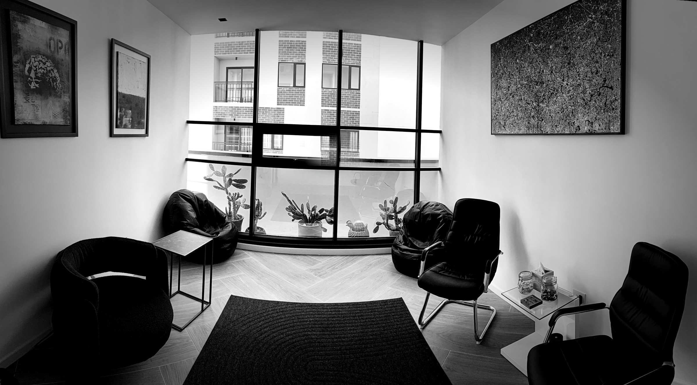

Psiquiatría
Logos Psyche
No vengas a que te diga qué tenés. Vení a conocerte.
"Conozco la psiquiatría desde los dos lados."
Construimos el diagnóstico juntos — porque es tu cuerpo, y decidís vos. Escucha sin juicio.
Integra Medical Center · Clínica 810 · Ciudad de Guatemala